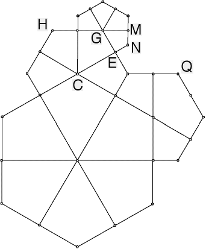

Tilings with Fractal Perimeters
Construction
Connect the arcs with segments as before, and erase the circle and arcs.
Draw segments from G to the midpoints of the segments just drawn.

Return to
Construction
.